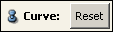

Ports
Degree
Mode
Editing Mode

Points
Specifies the control points that define the curve. The points can be modified by entering numerical values here, by moving the dragger and clicking on the middle mouse button, or by doing a click on an object in the viewer with the middle mouse button. In the Options menu, the dragger and the control points can be switched on and off in the display. Furthermore, the Interactive Feedback can be activated to see a preview of the future curve before appending a new point.
Display
Curve

Resets the curve to its original shape by removing changes made to it with the Curve Editor